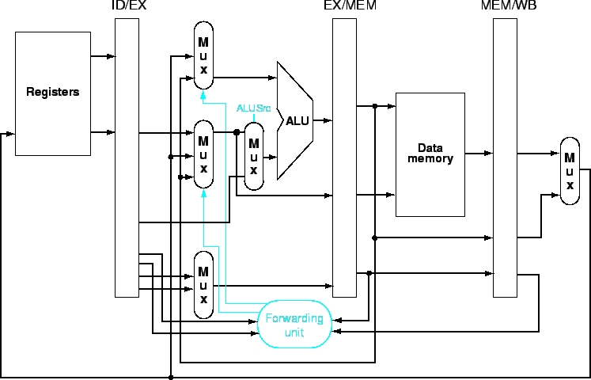

จากชุดคำสั่ง
sub $2, $1, $3 # Register $2 written by sub and $12, $2, $5 # 1st operand ($2) depends on sub or $13, $6, $2 # 2nd operand ($2) depends on sub add $14, $2, $2 # 1st ($2) & 2nd($2) depends on sub sw $15, 100($2) # Base ($2) depends on sub
เนื่องจากบางคำสั่งไม่มีการเขียนรีจีสเตอร์ ดังนั้นการตรวจสอบสัญญาณควบคุม RegWrite จะเป็นประโยชน์ประกอบในการตรวจสอบ Dependence โดยทำการ Forward เฉพาะเมื่อมีการตั้งค่า RegWrite
รูป 6.28 แสดง Dependency ระหว่างรีจีสเตอร์ไพพ์ลายน์และอินพุทของ ALU ซึ่งแสดงถึงการได้มาซึ่งผลลัพธ์ของการประมวลผล และป้อนกลับมาให้คำสั่งที่ตามมาโดยไม่เกิดการ Stall ซึ่งจากการตรวจจับ Hazard เราสามารถ Forward ค่ากลับมา โดยเพิ่ม Multiplexer ในตำแหน่งที่เหมาะสม
ในรีจีสเตอร์ ID/EX จะมีหมายเลข rt และ rs สำหรับตรวจจับ Hazard รูป 6.29 แสดงเส้นทางข้อมูลที่ไม่มีการ Forward และ มีการ Forward (ส่วนล่าง)
การตรวจจับ Hazard และการตั้งค่าสัญญาณที่จะแก้ไข Hazard มีรายละเอียดดังนี้
if (EX/MEM.RegWrite and (EX/MEM.RegisterRd != 0) and (EX/MEM.RegisterRd = ID/EX.RegisterRs)) ForwardA =10 if (EX/MEM.RegWrite and (EX/MEM.RegisterRd != 0) and (EX/MEM.RegisterRd = ID/EX.RegisterRt)) ForwardB =10
เป็นการ Forward ค่าจากคำสั่งก่อนหน้า ไปยังอินพุทของ ALU
if (MEM/WB.RegWrite and (MEM/WB.RegisterRd != 0) and (MEM/WB.RegisterRd = ID/EX.RegisterRs)) ForwardA =01 if (MEM/WB.RegWrite and (MEM/WB.RegisterRd != 0) and (MEM/WB.RegisterRd = ID/EX.RegisterRt)) ForwardB =01
ในกรณีที่มีชุดของคำสั่งที่อ่านและเขียนรีจีสเตอร์ตัวเดียวกันติดต่อกันเช่น
add $1, $1, $2 add $1, $1, $3 add $1, $1, $4 ...
การ Forward ของ MEM Hazard จะเป็น
if (MEM/WB.RegWrite and (MEM/WB.RegisterRd != 0) and (EX/MEM.RegisterRd != and (ID/EX.RegisterRs) and (MEM/WB.RegisterRd = ID/EX.RegisterRs)) ForwardA =01 if (MEM/WB.RegWrite and (MEM/WB.RegisterRd != 0) and (EX/MEM.RegisterRd != and (ID/EX.RegisterRt) and (MEM/WB.RegisterRd = ID/EX.RegisterRt)) ForwardB =01
รูป 6.30 แสดงฮาร์ดแวร์ที่รองรับการ Forwarding สำหรับเส้นทางข้อมูลแบบไพพ์ลายน์
รูป 6.31 แสดงฮาร์ดแวร์ที่เพิ่มเติมสำหรับการตัดสินใจเลือก รีจีสเตอร์และค่า Immediate เพื่อจะเลือกระหว่างค่า Immediate และ ForwardB
|

|